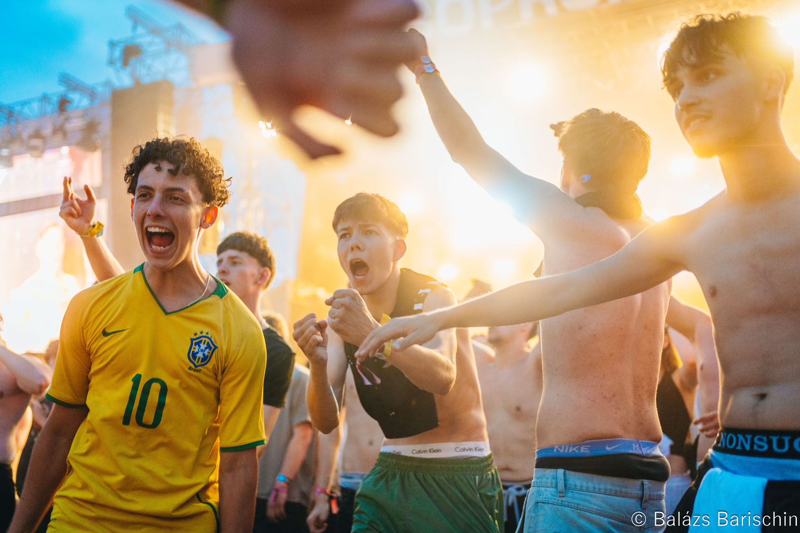
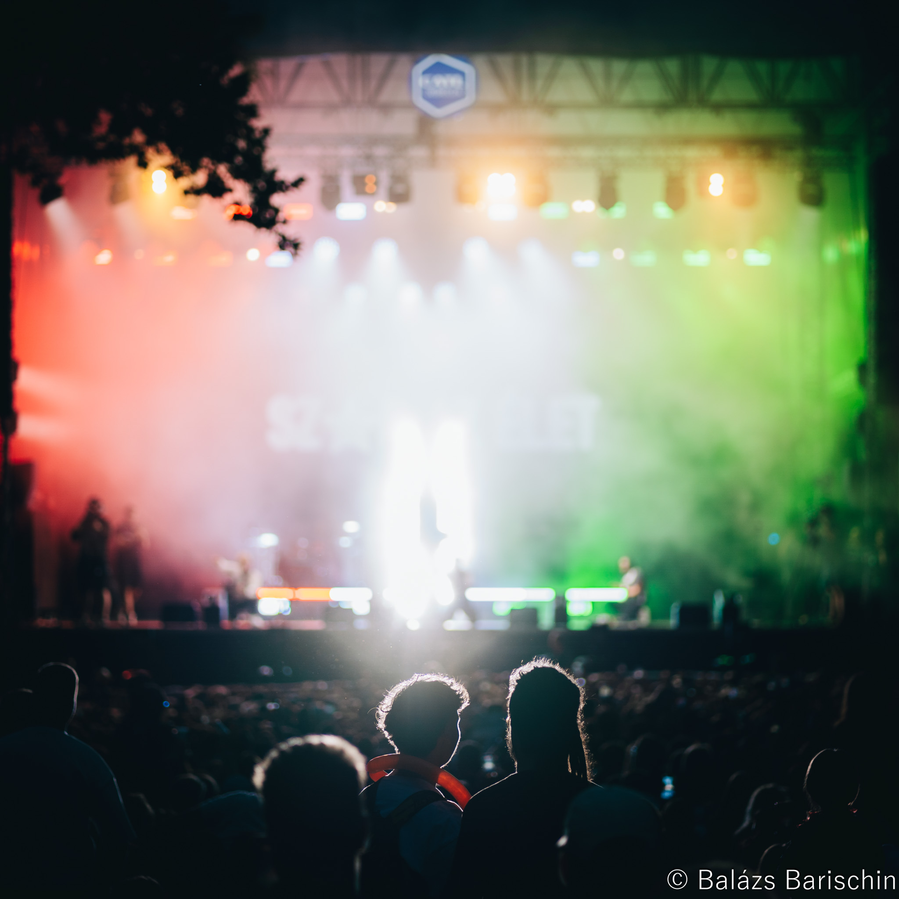
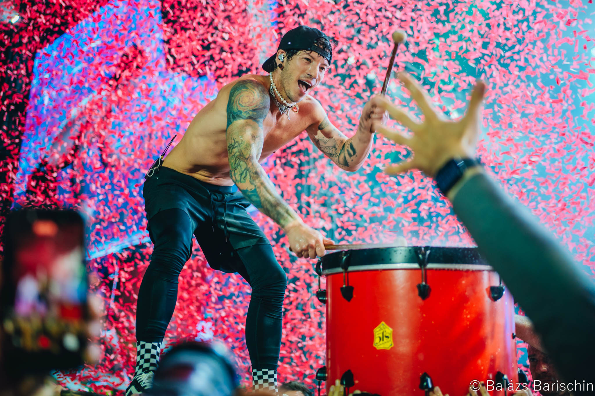
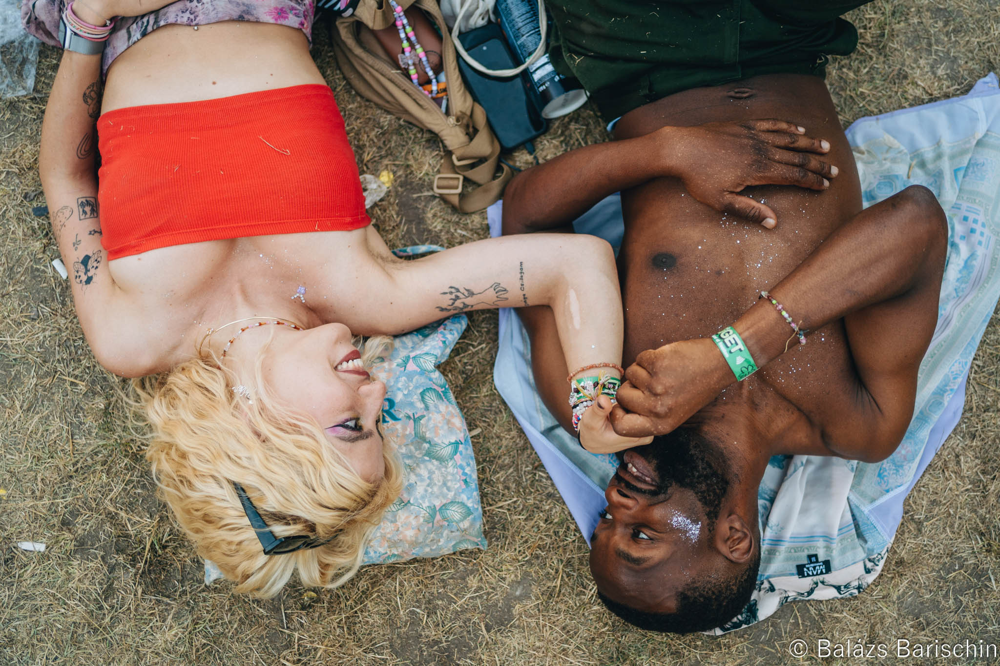
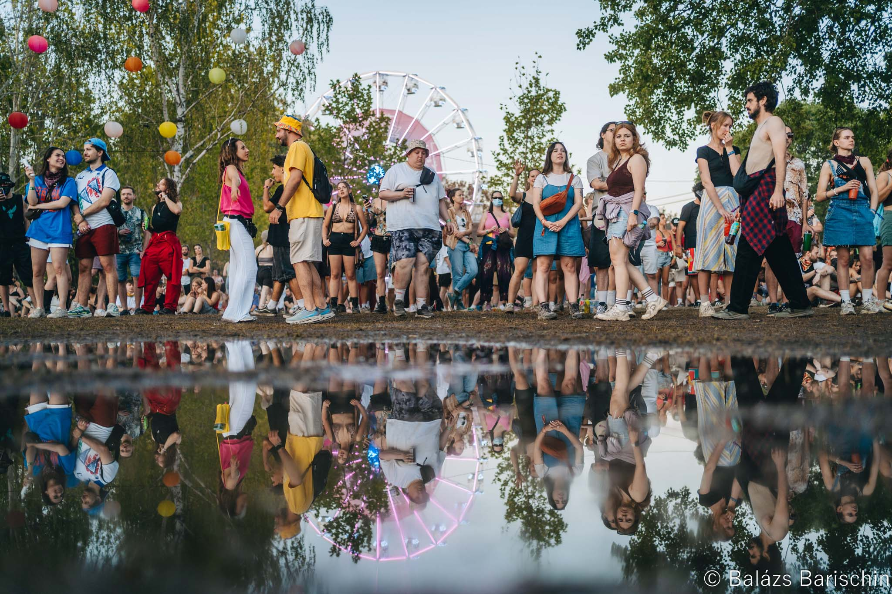
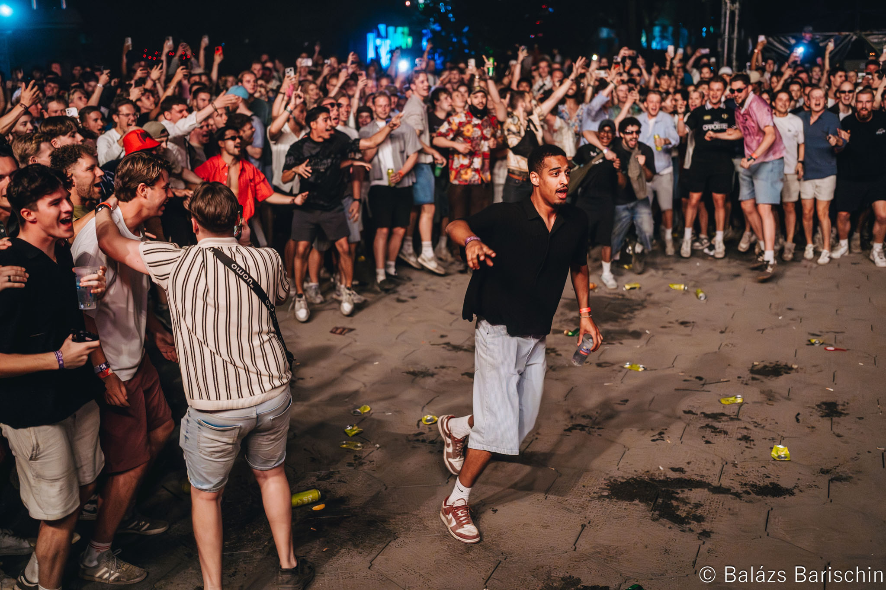
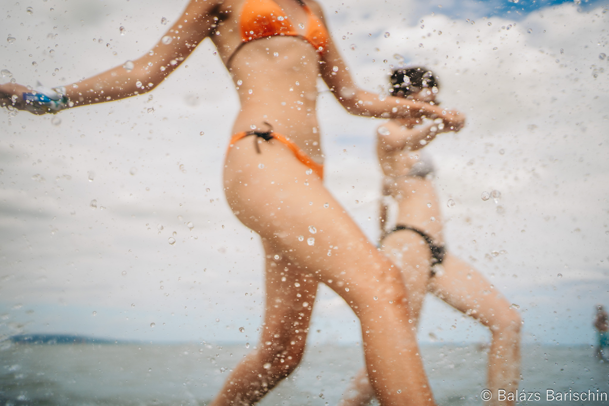
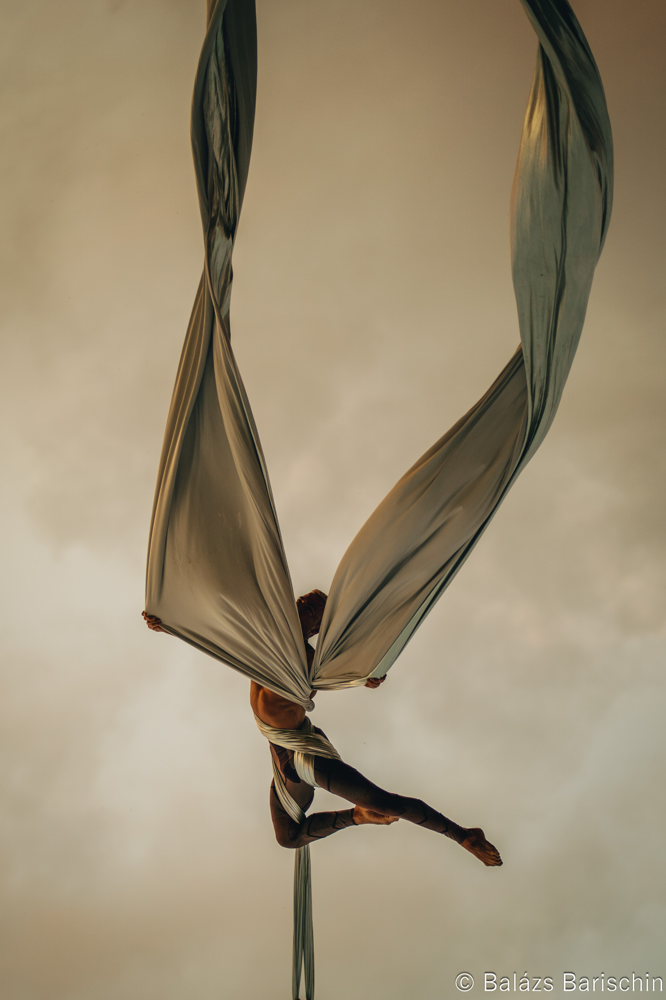
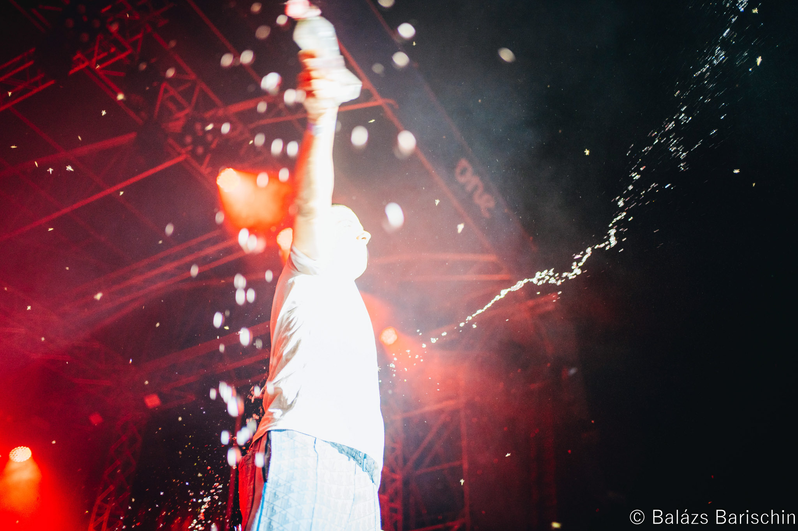
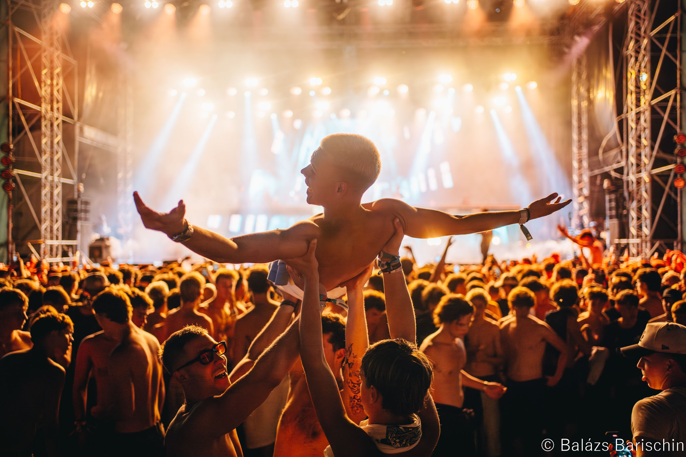

Frame 01 / 10
Golden Hour Roar
Sony A7 III • 35mm • f/1.8 • 1/2000s • ISO 100
Hi, I’m Balázs Barischin—a visual storyteller and photographer focused on expressive portraiture and moments.
01 / Introduction
My passion for photography began at the start of high school when my family upgraded our camera from an old pocket and shoot to a beginner MILC. I started documenting everything in my hometown. Over the past years, I have built a strong foundation in exposure control, natural lighting, and visual composition through practice and self-directed study. Alongside my high school and university coursework, I have photographed student cultural events, concerts, and portrait sessions. These early assignments taught me how to direct subjects comfortably, adapt quickly to unpredictable lighting, and deliver consistent visual stories on schedule.
Currently, I focus on portrait and event photography while expanding my visual portfolio for creative and editorial opportunities. Outside of university classes, I turned photography from a hobby to a part time job. I spent last summer in a festival photographer course, attending several big festivals in Hungary. Through every shoot, my goal is to capture genuine emotion and atmosphere rather than overly staged moments. A great picture comes from a great RAW photo, but editing can't be skipped. In my opinion, none of the parts work without the other.
After completing my degree, I aim to keep photography as a part time job besides an IT job. In the long term, I hope to turn this once a hobby to a full time job. I am always open to creative collaborations, portrait commissions and assistant roles on professional productions.
02 / Selected Works
Ten selected frames captured across Hungarian summer festivals—spanning golden-hour crowd euphoria, lakeside splashes, aerial acrobatics, and midnight stage energy. Click any image to inspect full-screen with camera metadata.

Sony A7 III • 35mm • f/1.8 • 1/2000s • ISO 100

Sony A7 III • 35mm • f/1.8 • 1/400s • ISO 800

Sony A7 III • 35mm • f/1.8 • 1/1000s • ISO 1250

Sony A7 III • 35mm • f/1.8 • 1/640s • ISO 160

Sony A7 III • 35mm • f/1.8 • 1/500s • ISO 250

Sony A7 III • 35mm • f/1.8 • 1/320s • ISO 2500

Sony A7 III • 35mm • f/1.8 • 1/3200s • ISO 100

Sony A7 III • 35mm • f/1.8 • 1/1600s • ISO 200

Sony A7 III • 35mm • f/1.8 • 1/640s • ISO 2000

Sony A7 III • 35mm • f/1.8 • 1/500s • ISO 1600
03 / Craft & Equipment
From on-location natural lighting to color-calibrated RAW post-processing, here is how I plan, shoot, and deliver every project.
Available for individual portrait sessions, high school year books, weddings and other events.
Full-frame mirrorless system paired with fast prime lenses for low-light versatility, crisp subject separation, and distortion-free wide perspectives.
RAW photo culling, custom color grading, subtle skin retouching and calibrated high-resolution web & print delivery.
04 / Bookings & Inquiries
Interested in booking a portrait session, covering an upcoming event or collaborating on a creative visual project? Feel free to reach out.
Email address copied to clipboard!